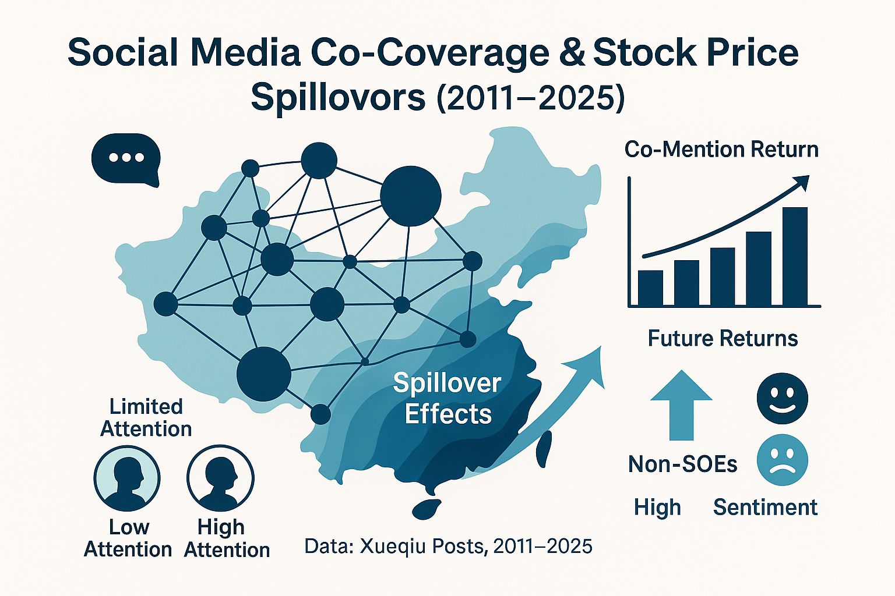
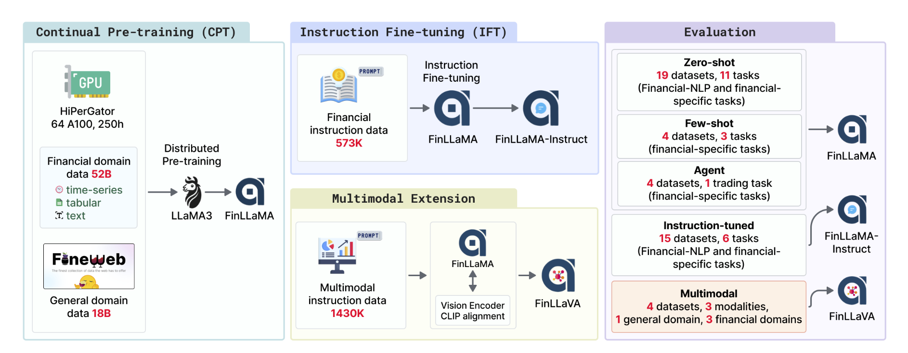
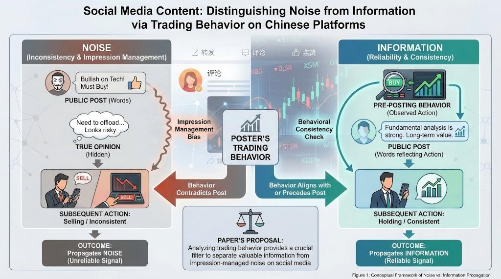

Publications
* indicates equal contribution
Discover more on Google Scholar
2025

arXiv preprint 2025
🏅 Top-performing Open-source ML engineering agent on MLE-bench
A comprehensive, decoupled framework that formalizes the machine learning engineering process into Research and Development phases and six components, achieving 35.1% any medal rate on MLE-Bench, SOTA among existing open-source ML engineering agents.

NeurIPS 2025
🏆 Best Paper Award, ICLR 2025 Workshop on Advances in Financial AI (1/53)
A multi-agent simulation platform for financial markets that integrates behavioral economics and social network dynamics, enabling large-scale market experiments with diverse agent behaviors.

Findings of NAACL 2025
A comprehensive benchmark evaluating LLMs' financial expertise from a user-centric perspective, covering domain knowledge, application capabilities, and trustworthiness across 300+ real-world questions.
'">
Shared Fortunes and Risks: Stock Price Spillover Effects of Corporate Ties — Evidence from the Chinese Social Media Platform "Xueqiu"
The 7th Conference of the Chinese Society of Optimization, Overall Planning, and Economic Mathematics, 2025
🎖️ Outstanding Paper Award (10/190)
Investigates stock price spillover effects through corporate network ties on social media, revealing how social connections influence market dynamics and investor behavior.
2024
'">
arXiv preprint 2024
🎯 First open-source financial multimodal LLM: FinLLaVA-8B
A series of Financial LLMs including FinLLaMA (pre-trained on 52B tokens), FinLLaMA-instruct (573K instructions), and FinLLaVA (first open-source financial multimodal LLM) trained with 1.43M image-text instructions.
'">
Do investors' actions speak louder than words?
The 21st Annual Conference on Financial Engineering and Risk Management, 2024
Examines whether posts on Chinese social media propagate noise or information, proposing that both coexist but can be distinguished by posters' trading behavior. Observing trading actions helps assess the reliability of expressed views.